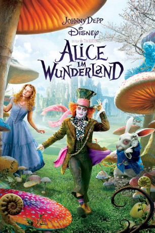

Alternativ: Alice in Wonderland
Auszeichnungen: 2 Oscars gewonnen für 1 Oscars nominiert 2 BAFTA-Awards gewonnen
 
 IMDB-Wertung: 6.5 / 10
IMDB-Wertung: 6.5 / 10  Metascore:
Metascore: 
Nach vielen Jahren kehrt die inzwischen 19-jährige Alice zurück ins Wunderland, einem faszinierenden Ort jenseits aller Vorstellungskraft. Dort trifft sie auf viele außergewöhnliche Charaktere wie den verrückten Hutmacher, die weiße und rote Königin, sowie das weiße Kaninchen. Auf ihrer unglaublichen Reise durch diese zauberhafte Welt findet Alice heraus, wer sie wirklich ist.
Jahr: 2010
Dauer: 108 Minuten
FSK: 12
Land: USA Studio: Walt Disney Studios Motion PicturesTonspuren:
Untertitel:
Auflösung: 1080p (1920x1080) Größe: 6000 MB
Genre: Abenteuer, Fantasy, Familie
Regisseur:  Tim Burton
Tim Burton
Drehbuch: Linda Woolverton, Lewis Carroll
Soundtrack: Danny Elfman
Darsteller:
 Johnny Depp als Mad Hatter
Johnny Depp als Mad Hatter Helena Bonham Carter als Red Queen
Helena Bonham Carter als Red Queen Anne Hathaway als White Queen
Anne Hathaway als White Queen Matt Lucas als Tweedledee / Tweedledum
Matt Lucas als Tweedledee / Tweedledum Michael Sheen als White Rabbit
Michael Sheen als White Rabbit Stephen Fry als Cheshire Cat
Stephen Fry als Cheshire Cat Alan Rickman als Blue Caterpillar
Alan Rickman als Blue Caterpillar Timothy Spall als Bayard
Timothy Spall als Bayard Marton Csokas als Charles Kingsleigh
Marton Csokas als Charles Kingsleigh Lindsay Duncan als Helen Kingsleigh
Lindsay Duncan als Helen Kingsleigh Leo Bill als Hamish
Leo Bill als Hamish Imelda Staunton als Tall Flower Faces
Imelda Staunton als Tall Flower Faces Christopher Lee als Jabberwocky
Christopher Lee als Jabberwocky Joel Swetow als Man with Large Belly in Red Queen Court
Joel Swetow als Man with Large Belly in Red Queen Court Ethan Cohn als Man with Large Chin in Red Queen Court
Ethan Cohn als Man with Large Chin in Red Queen Court Jim Carter als Executioner
Jim Carter als Executioner Frank Welker als Additional Vocal Effects
Frank Welker als Additional Vocal Effects Brighid Fleming als Maypole Dancer , uncredited
Brighid Fleming als Maypole Dancer , uncreditedDatei: X:\2-Dilogie(A-F)\Alice im Wunderland\Alice im Wunderland (2010, FSK12, 1920x1080) 3D.mkv seit 20.10.2015
Festplatte: HD Collection-2(A-Z)-3(A-M)
 Es gibt insgesamt 7 Filme in der Gruppe '2-Dilogie(A-F)\Alice im Wunderland'
Es gibt insgesamt 7 Filme in der Gruppe '2-Dilogie(A-F)\Alice im Wunderland'